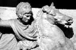

Bir antik tarihçi Büyük İskender’den (MÖ 356-323) bahsederken şöyle der: “Mücadele edip de yenmediği hiçbir düşmanı yoktur. Kuşattığı her şehri almıştır. İşgal ettiği her ulusa boyun eğdirmiştir.” Mısır’dan Hindistan’a uzanan fetihleri, Yunanlılar tarafından bilinen dünyanın her yerine ulaşmıştır. Sadece otuz üç yaşına kadar yaşamış olmasına rağmen böyle bir başarı elde etmiş olması dikkate değerdir.

İskender’in fetihleri Yunan geleneklerini ve dilini Akdeniz’de yaygınlaştırmıştır. Böylece Yunanca bölgenin hakim dili haline gelmiştir. Sonraki üç yüz yıl boyunca İskender’in varisleri onun kurduğu imparatorluğun çeşitli bölgelerini yönetmişlerdir. Bu dönemin sonunu ise Roma istilası getirmiştir.
Bir Yunan krallığı olan kuzeydeki Makedonya’da dünyaya geldi. Makedon Kralı 2. Philip’in ve eşlerinden biri olan Olympias’ın oğluydu. Gençliğinde filozof Aristo’dan (MÖ 384-322) dersler aldı. Aristo genç prense bilim, edebiyat ve felsefe aşkı aşıladı. İskender aynı zamanda çok iyi bir at binicisiydi. Atı Bucephalus, fetihleri sırasında ona eşlik etti ve antik dünyanın en ünlü hayvanlarından biri haline geldi.
MÖ 336 yılında Philip bir suikaste kurban gitti. İskender henüz yirmi yaşındayken onun yerine tahta geçti. Birkaç yıl içinde Makedonya’yı Yunanistan’da hakim güç haline getirdi. Atina ve Thebes gibi şehir devletlerini konrol altına aldı. Ardından ordularını on yıl sürecek bir dünya seferine çıkardı. Mısır’ı, Hindistan’ı ve Yunanistan’ın ezeli düşmanı olan Pers İmparatorluğu’nu fethetti. Askerleri düzinelerce şehir kurdu ve üç kıtaya yayılan bir imparatorluğu kontrol ettiler.
İskender, inançlarını yendikleri halklara empoze etmeye çalışan fatihlerden farklı olarak Pers kültürü ile ilgilendi ve ona ait pek çok geleneği benimsedi. Bu politikası pek çok komutanın tepkisini çekti. Özellikle İskender’in binlerce askerini toplu bir düğünle Pers kadınlarıyla evlenmeye zorlaması büyük öfkeye yol açtı. İskender, Susa şehrinde gerçekleştirilen bu düğünle Yunan ve Pers kültürlerinin birarada yaşayabileceğini göstermek istemişti.
İskender’in Babil’deki ölümünün nedeni tartışma konusu olmuştur. Kimi çağdaşları onun zehirlenmiş olduğundan şüphelenmiştir: “O düşmanlarına yenilmedi. Güvendiği kişiler ona bir komplo kurdular.” Ne var ki 1998 yılında tamamlanan bir araştırmada muhtemelen tifo ateşinden öldüğü sonucuna varılmıştır.
Ek Bilgiler
1- Oliver Stone’un yönettiği 2004 yapımı Alexander filminde, İskender rolünü İrlandalı aktör Colin Farrel (1976-) oynamıştır. Büyük fatih aynı zamanda aralarında William Shatner (1931-) ve Richard Burton’un (1925-1984) da bulunduğu pek çok başka aktör tarafından da canlandırılmıştır.
2- İskender’in en sevdiği kitap olan İlyada’yı uyurken bile yastığının altında tuttuğu söylenir.
3- Efsaneye göre İskender ölümünden sonra mumyalanmıştır. Naaşı kendi adıyla onurlandırılan Mısır’daki İskenderiye şehrine götürülmüştür.